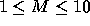

| Message Routing |
The International Standards Organization has defined a Message Handling System (MHS) called X.400. One of the functional units of a MHS, the MTA, handles routing of messages. Routing is performed based on components of the Originator/Recipient name. For the purposes of this problem, valid components of an O/R name (in order of widest scope to narrowest scope) are Country (C), Administrative Management Domain (ADMD), Private Management Domain (PRMD), and Organization Name (O). Each MTA uses its own routing table to forward messages on to the next MTA or delivering the message locally.
Your program is to simulate a collection of MTAs processing messages. Each time a message arrives (or is submitted) to an MTA, the MTA uses the O/R name of the message and the MTA's routing table to forward the message on to the appropriate MTA. If the MTA finds that the message's final destination is itself, it will deliver the message locally. Your program is to simulate this message-forwarding activity to trace the path of mail through the set of MTAs.
The routing function is accomplished by comparing the supplied fields of entries in the routing table against the O/R name components of the message. Each routing table entry refers to exactly one MTA although MTAs may have multiple entries in the routing table. The first routing table entry (starting from the top) whose fields match the corresponding O/R name components in the message is selected and the message is forwarded to that MTA. It is possible for routing table entries to contain a wildcard (denoted by an asterisk); wildcard components always match the contents of the corresponding O/R name component in the message.
MTAs are also responsible for routing error detection and recovery. If an MTA detects that it has received a message that it has handled before (a circular routing path is detected), it will place the message in the undeliverable queue and generate a non-delivery report. In addition, if an MTA is unable to route a message (ie no routing table entry match the message's O/R name), it will place the message in the undeliverable queue and generate a routing error report.
Input to your program will consist of a series of message routing scenarios. Input for each scenario starts with a single line that contains a single integer (  ) indicating the number of MTAs in the scenario. Subsequent lines will contain a description for each of the M MTAs.
Each MTA description starts with a line containing the name of the MTA (a left justified alphabetic string of 1 to 10 characters with no embedded spaces) in columns 1-10 and an integer ( ) in column 12 indicating the number of entries in the MTA's routing table. Each of the following I lines will then contain a valid name of an adjacent MTA in columns 1-10 followed by the Country, ADMD, PRMD, and Organization Name in columns 15-24, 30-39, 45-54, and 60-69 respectively. Each O/R name component will consist of 1 to 10 alphabetic characters left-justified in their field with no embedded blanks. Alternatively, an O/R name component may contain a single asterisk (*) in the first column in the field indicating a wild-card match in the field.
Following the description of the MTAs, there will be a single line containg a single integer (0<N<32768) indicating the number of messages to be sent in the simulation. Each of the subsequent N lines will contain the description of exactly one message. Each message description contains a valid name of one of the MTAs described above left-justified in columns 1-10 followed by the Country, ADMD, PRMD, and Organization Name in columns 15-24, 30-39, 45-54, and 60-69 respectively. Each O/R name component will consist of 1 to 10 alphabetic characters left-justified in their field with no embedded blanks and the MTA name is where the message is submitted and the simulation begins.
For each scenario, you are to print ``Scenario # X" where X is the number of the scenario starting with 1 and incrementing for subsequent scenarios. Each of the following N lines will contain the number of the message left-justified in column 1 immediately followed by one of the following messages:
`` -- delivered to MTA_NAME",
`` -- circular routing detected by MTA_NAME", or
`` -- unable to route at MTA_NAME".
In all three messages, MTA_NAME is replaced by the name of the MTA
generating the report. Other than MTA_NAME, you are to print the
string exactly as above including spacing and dashes. After the list of message reports, you are to print a single blank line
and continue processing with the next scenario.
5 NAULINS 3 HOUSTON US SHIP * UHDOWNTOWN NAULINS US SHIP * UNO DALLAS US AIR UT * HOUSTON 4 HOUSTON US * UH UHDT SANANTONIO US BUS UT UTSA DALLAS US AIR UT * NAULINS US SHIP * UNO DALLAS 7 DALLAS US * UT UTD DALLAS US * UT UTA HOUSTON US * UH * SANANTONIO US AIR UT UTSA OKLAHOMA US BUS * OU NAULINS US AIR * UNO HOUSTON US SHIP * * OKLAHOMA 3 OKLAHOMA US * * OU DALLAS US AIR * * SANANTONIO US BUS * * SANANTONIO 5 HOUSTON * * * UNO HOUSTON US BUS UH * DALLAS US AIR * * SANANTONIO US * UT UTSA OKLAHOMA US BUS * * 5 SANANTONIO US AIR COLLEGE UNO OKLAHOMA US BUS UH UHDT DALLAS US SHIP COLLEGE UNO NAULINS US AIR COLLEGE OU HOUSTON US AIR UT UTSA
Scenario # 1 1 -- unable to route at HOUSTON 2 -- delivered to HOUSTON 3 -- delivered to NAULINS 4 -- unable to route at NAULINS 5 -- circular routing detected by DALLAS